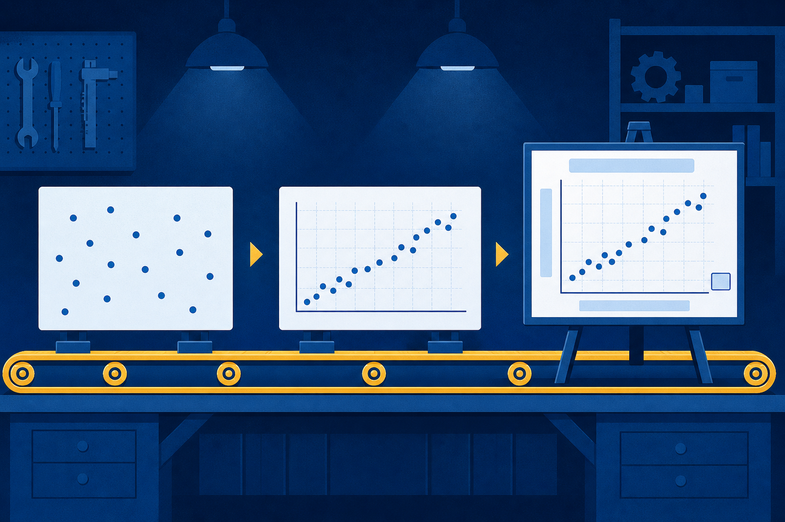
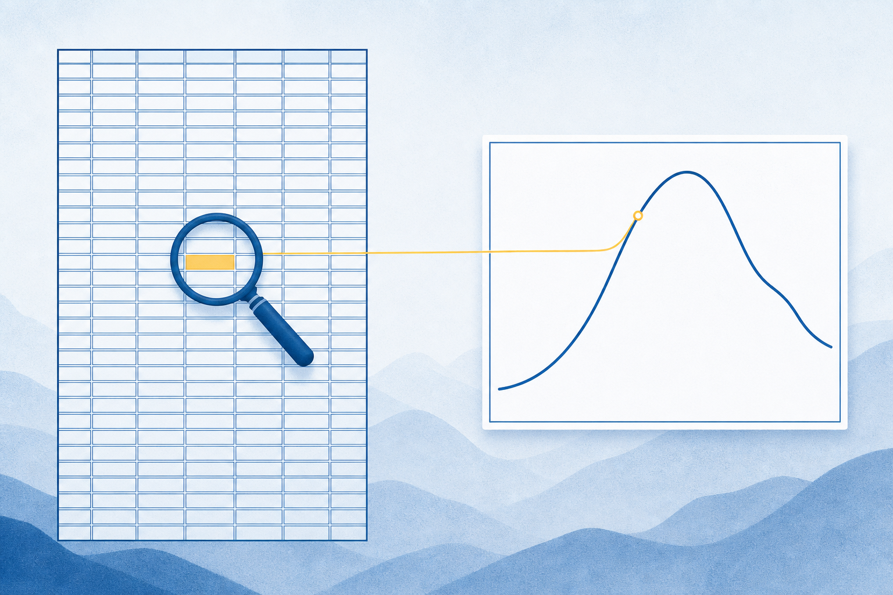

Line, bar, scatter, and histogram
Chapter 7
Make the pattern visible.
Build and choose clear charts with matplotlib.
Opening question: When does a chart reveal more than the same values in a table?
Build and choose clear charts with matplotlib.
Opening question: When does a chart reveal more than the same values in a table?
Line, bar, scatter, and histogram
Title, units, legend, scale, and layout
Match the visual form to the analytical goal
| Month | Avg high |
|---|---|
| Jan | 67.2°F |
| Apr | 85.2°F |
| Jul | 106.5°F |
| Oct | 89.4°F |

months
tempsplt.plot(x, y)title · xlabel · ylabelplt.show()import matplotlib.pyplot as plt
Monthly website traffic
Complaints by product
House size and price
plt.title(...)plt.xlabel('Month')plt.ylabel('Average high (°F)')No units. No question. Weak hierarchy.
Named claim, Fahrenheit units, and visible observations.
figsize=(12, 6) sets the stage, not the evidence.plt.subplots(1, 2) creates two places to draw.fig, (ax1, ax2) = plt.subplots(1, 2)sharey=True keeps slope and magnitude honest.Both panels fill their frames.
The smaller change stays smaller.
plt.tight_layout() gives every label room.linebarscatterhistogramQuarterly profit, 2020-2023
Complaints across five products
Customer age and purchase amount
Name the question, source, units, and trade-off in every chart choice.
Exit ticket: Choose one Skills Lab question. Name the chart, the pattern it reveals, and one thing it makes harder to see.
Build the chart. Defend the choice.
